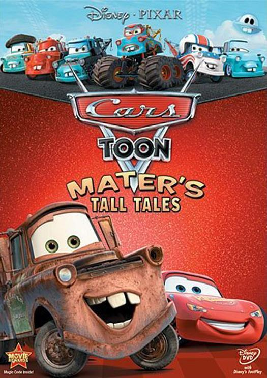
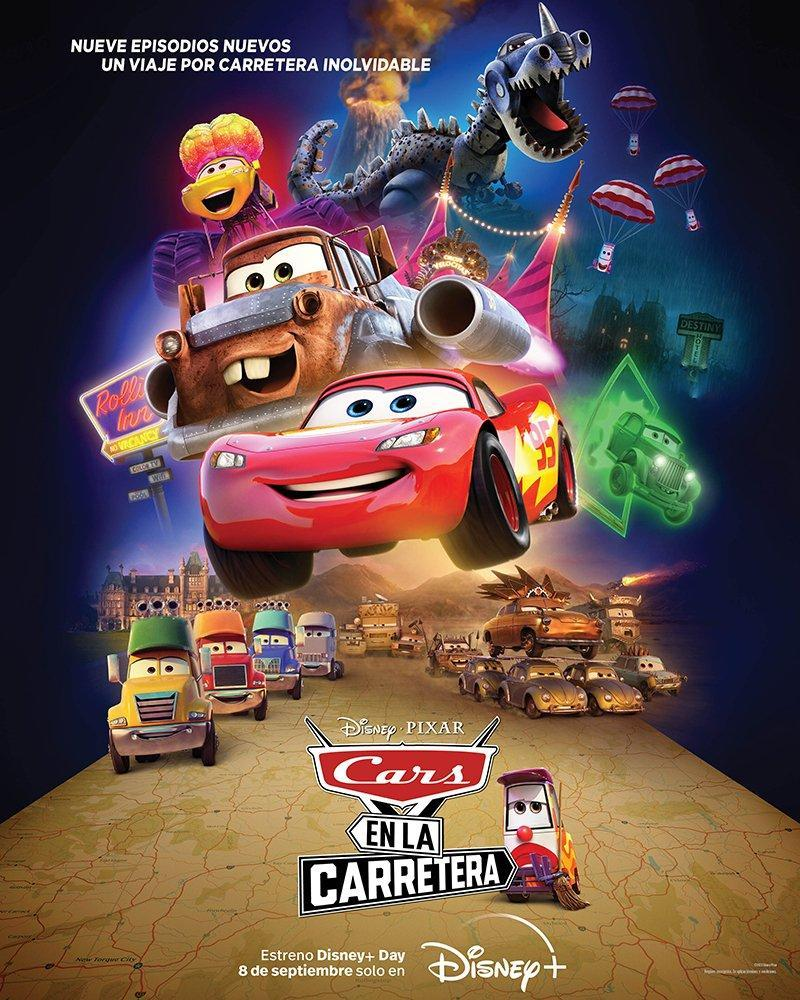
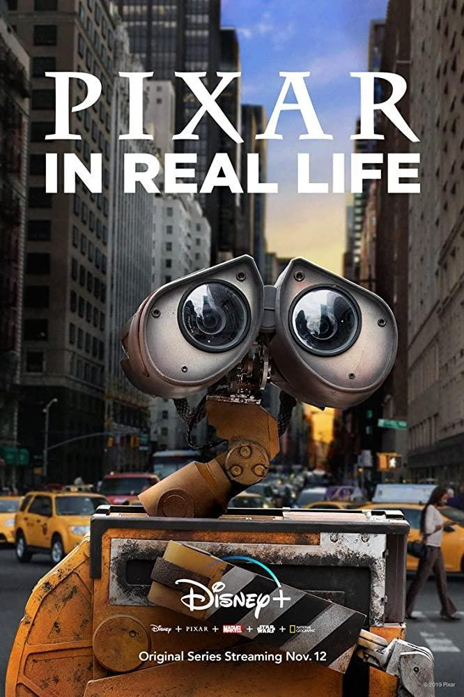
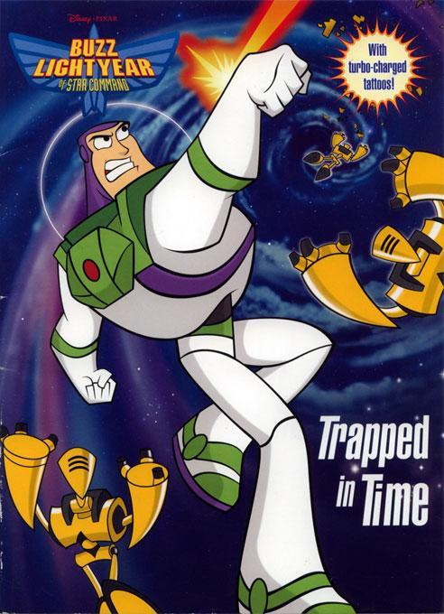

| Título | Resumo | Datos técnicos | Foto |
|---|---|---|---|
| Los cuentos de Mate | Serie de TV (2008-2014). "Cars Toons" es una serie corta de Disney Channel producida por Pixar para esta cadena. Está basada en la película "Cars" y protagonizada por los personajes Mate y Rayo McQueen. |
Año: 2008
Duración: 7 min. País: Estados Unidos Dirección: John Lasseter, Rob Gibbs, Victor Navone Guion: Scott Morse. Historia: Bobby Podesta Música: Bruno Coon, Mark Mothersbaugh, BT, Mark Watters |
 |
| Cars en la carretera | Serie de TV (2022). 9 episodios. Sigue a Rayo McQueen y su mejor amigo Mate mientras se dirigen hacia el este desde Radiador Springs en un viaje a través del país para reunirse con la hermana de Mate. |
Título original: Cars on the Road
Año: 2022 Duración: 10 min. País: Estados Unidos Dirección: Steve Purcell, Brian Fee, Bobby Podesta Guion: Steve Purcell. Personajes: John Lasseter Música: Jake Monaco |
 |
| Pixar en la vida real | En esta serie, personajes y escenas icónicas de las películas de Pixar cobran vida. Grabada en lugares dentro y fuera de Nueva York, la serie sorprende y alegra a gente real en aquellos lugares donde menos se lo esperan. |
Título original: Pixar in Real Life
Año: 2019 Duración: 5 min. País: Estados Unidos Dirección: Charlie Todd Fotografía: Justin Ayers |
 |
| Buzz Lightyear del Comando Estelar | Serie de TV (2000-2001). 62 episodios. Serie de animación protagonizada por el popular personaje de Toy Story, en el que acompañado por un comando espacial debía acabar con varios enemigos. Su episodio piloto (Tad Stones, 2000) fue comercializado en DVD a modo de película independiente bajo el título de "Buzz Lightgear: La película". |
Título original: Toy Story: Buzz Lightyear of Star Commandaka
Año: 2000 Duración: 25 min. País: Estados Unidos Estados Unidos Dirección: Victor Cook, Don MacKinnon, Steve Loter, Denise Koyama, Chris Rutkowski Guion: Michael Merton, John Behnke, Rob Humphrey, Jim Peterson, ver 33 más Música: Adam Berry |
 |
|
Empresa 100% Real |
Copyright 2024 | Al usar esta página aceptas el uso de cookies |